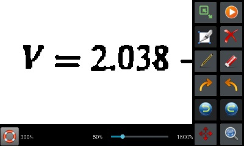

User is able to use finger to write math expression(s) on the screen, and then app will recognize the math expressions.
As shown in the following screen snapshot, user taps one of the right 12 buttons to edit the handwriting math expressions or start to recognize the expression(s). From left and top, the 12 buttons are 1. resize button; 2. recognize button; 3. select button; 4. delete button; 5. paint button; 6. eraze button; 7. rotate clockwise button; 8. rotate anti-clockwise button; 9. revert last editing; 10. repeat last editing; 11. zoom-in button and 12 auto-zoom button.

Note that this functionality is still at beta stage. Only simple expressions can be recognized. Currently supported characters include numbers, selected simple English letters i.e. x, y, z, a, b, c, e, etc, and some special characters e.g. π, Σ, Π. Supported expression types are 1. Addition; 2. Subtraction; 3. Multiplication; 4. Division; 5. Fractions; 6. Roots; 7. Polynomials; 8. Exponents; 9. Algebra; 10. Integration; 11. Summation (Σ); and 12. Product (Π). And recognition accuracy is still low.